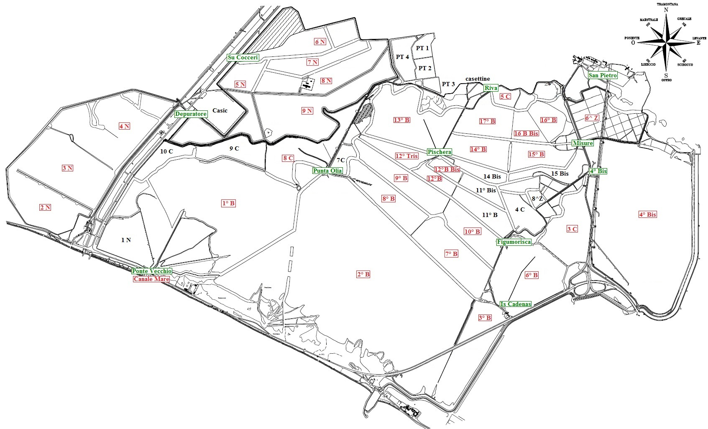

Salina Ing. Luigi Conti Vecchi
Descrizione Processo Lavorazione
Previsioni Meteo Salina
Stazioni di sollevamento
Stazione Ponte Vecchio
Stazione Depuratore
Stazione Su Cocceri
Stazione Is Cadenas
Stazione Punta Olia
Stazione Figumorisca
Stazione 4° Bis
Stazione Pischeraa
Stazione Misure
Stazione San Pietro
Stazione Riva
Punti di campionamento
Canale Mare
Bacino 2 N
Bacino 3 N
Bacino 1° B
Bacino 2° B
Bacino 4 N
Bacino 5 N
Bacino 6 N
Bacino 7 N
Bacino 8 N
Bacino 9 N
Bacino 8 C
Bacino 3° B
Bacino 6° B
Bacino 7° B
Bacino 8° B
Bacino 9° B
Bacino 12° Tris
Bacino 10° B
Bacino 3 C
Bacino 4° Bis
Bacino 12° B
Bacino 12° B Bis
Bacino 13° B
Bacino 14° B
Bacino 15° B
Bacino 6^ Z
Bacino 5 C
Bacino 16° B
Bacino 16° B Bis
Bacino 17° B
Nome Utente
Logout
Planimetria bacini di evaporazione

Stazione Meteo Salina